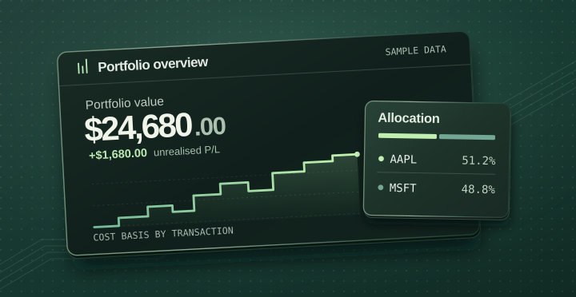

Start with the transactions
Holdings are reconstructed from dated BUY and SELL records. Average-cost accounting separates realised gains from the unrealised performance of shares still held.
Full-stack application
A full-stack application that turns buy and sell transactions into holdings, cost basis, dividends and portfolio performance.

A portfolio is more than a list of prices. Trades, fees and partial sales all change what a position is worth. The challenge was to make those relationships consistent from the database through to the dashboard.
Dashboard, holdings and transactions
JWT routes, Zod validation and quote cache
Users, trades and dividend records
Holdings are reconstructed from dated BUY and SELL records. Average-cost accounting separates realised gains from the unrealised performance of shares still held.
PostgreSQL and Prisma model users, transactions and dividends. Monetary amounts use integer cents, with transaction fees included in the calculations.
Quote providers sit behind a common interface and a configurable 60-second cache. Portfolio calculations remain separate from the external market-data provider.
An interactive illustration
Switch between sample holdings and their underlying transactions.
Portfolio value
$2,160.00+$160.00 unrealised P/L| Asset | Shares | Value |
|---|---|---|
| AAPL | 5 | $900.00 |
| MSFT | 3 | $1,260.00 |
| Total | $2,160.00 | |
| Trade | Shares | Cost |
|---|---|---|
| Buy AAPL | 5 | $800.00 |
| Buy MSFT | 3 | $1,200.00 |
| Cost basis | $2,000.00 | |
Illustrative interface with fixed sample prices and zero fees.
Open to software engineering opportunities
Front-end, back-end and full-stack roles.
Based in Halifax. Open to opportunities across Canada.